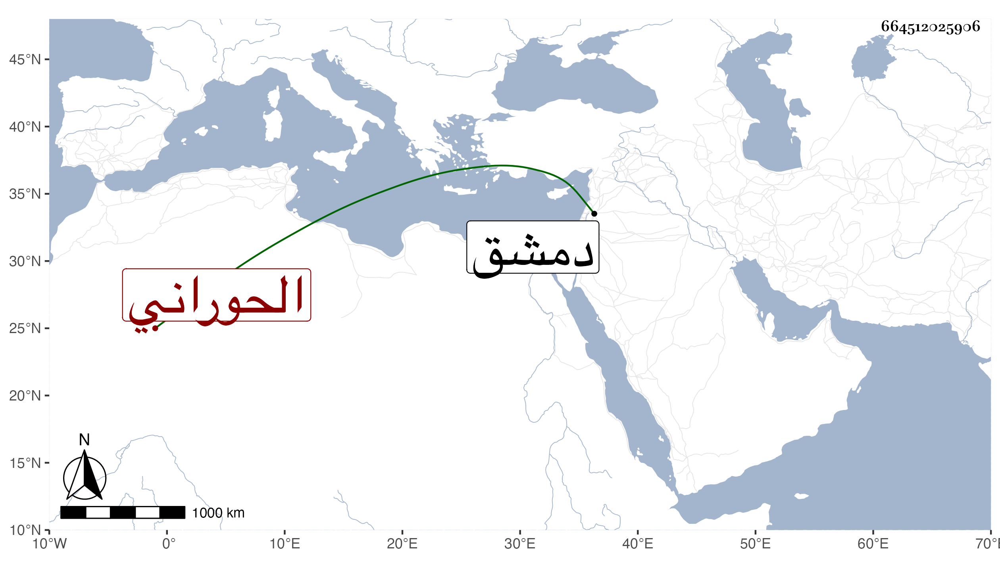

0902Sakhawi.DawLamic.ITO20230111-ara1.EIS1600.664512025906
Biography ID: 664512025906
48
محمد بن أحمد بن علي الحوراني نزيل الصالحية ويعرف بابن الحوازى . سمع هو وأخ له اسمه عمر من المحب الصامت في ربيع الأول سنة خمس وثمانين وسبعمائة النصف الأول من فوائد أبي يعلي الصابوني ولقيه ابن فهد ، ورأيت في طبقة علي بن المحب في التاريخ المعين محمد وعمر ابنا أحمد بن محمد الحوراني وسألت في رحلتي لدمشق من أهلها عنه فقيل لي عن شخص اسمه أمين الدين محمد بن أحمد الحوراني كان له أخ اسمه عمر ولكن لم يحقق القائل اسم جدهما ومع ذلك فما أمكن لقيه .
